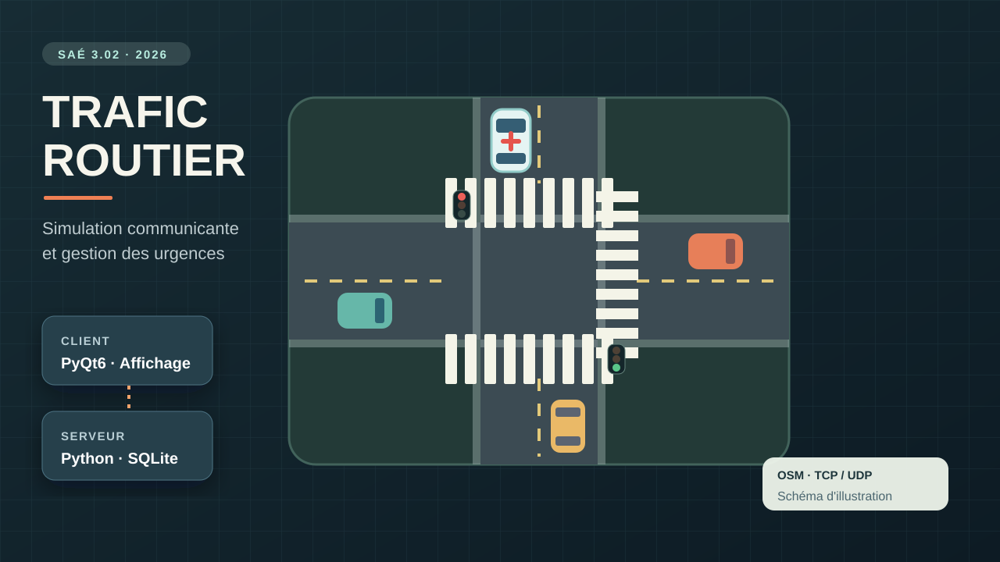
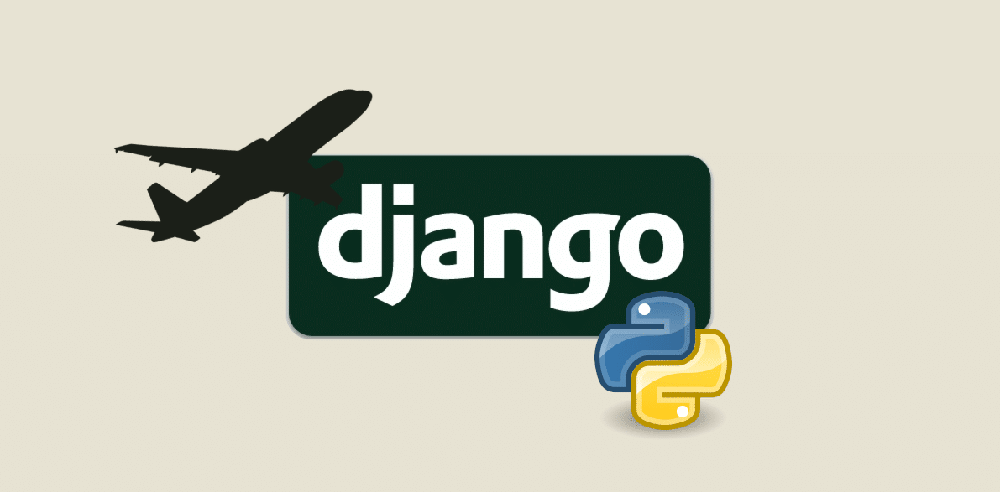
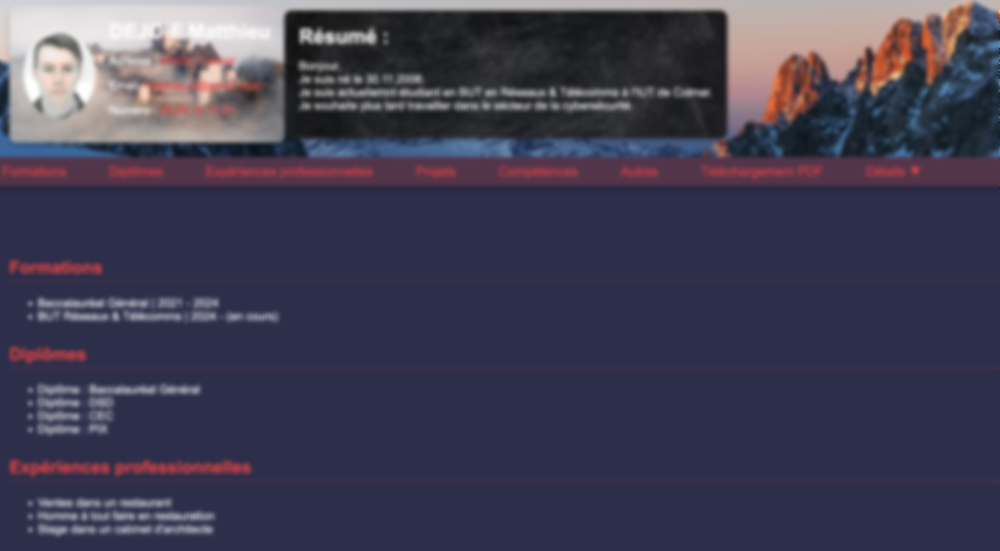
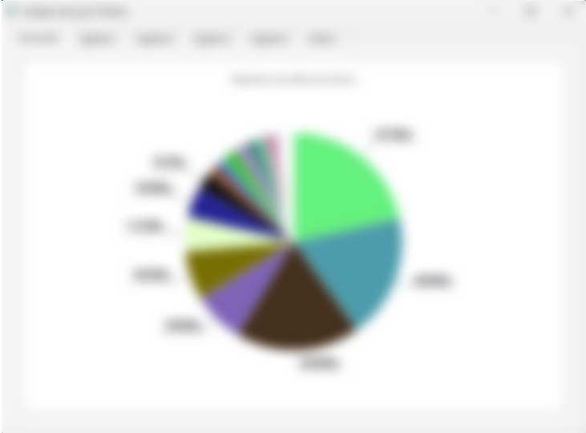

Simulation de trafic routier
Simulation PyQt6 communicante : carrefours, véhicules prioritaires, cartes OSM hors ligne et architecture client-serveur.
Projets
Une sélection de réalisations menées au cours de ma formation.
8 projet(s) affiché(s)

Simulation PyQt6 communicante : carrefours, véhicules prioritaires, cartes OSM hors ligne et architecture client-serveur.

Système de mesure de l’occupation des salles associant Raspberry Pi, vision par ordinateur, MQTT et dashboard.

Application Django permettant de gérer les aéroports, les pistes, les compagnies, les avions et les vols.

Conception d’un CV sous forme de site web responsive et accessible.

Outil Python doté d’une interface PyQt5 pour détecter, visualiser et supprimer de manière sécurisée les fichiers volumineux.
Analyse et optimisation d’un réseau Wi-Fi dans le bâtiment C, du câblage physique jusqu’à la simulation.
Analyse des bonnes pratiques de sécurité et mise en place d’un protocole d’hygiène pour les postes utilisateurs.

Conception et sécurisation d’un réseau local complet avec VLAN, routage, DHCP, services Linux et règles de filtrage.
Essayez de modifier ou de réinitialiser les filtres.